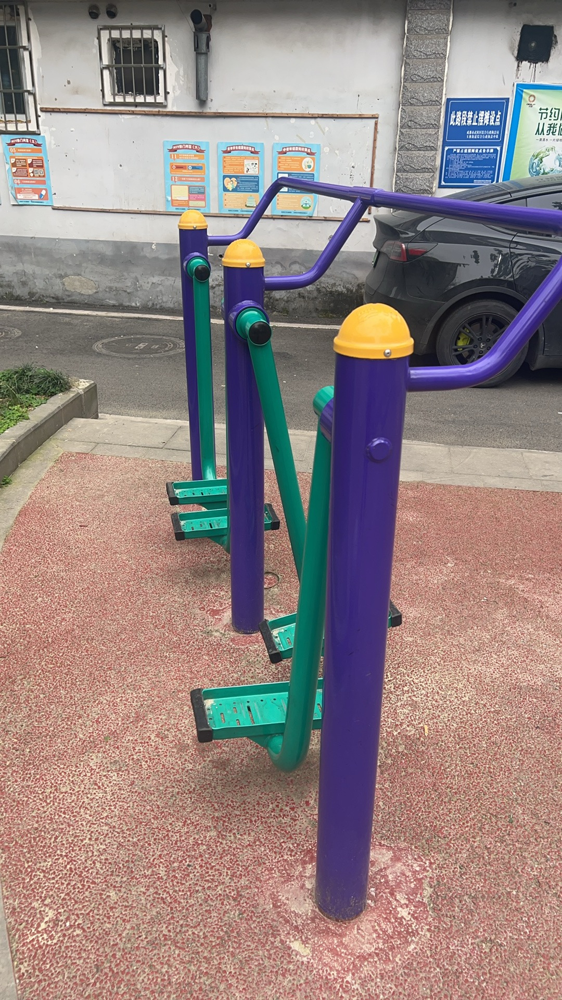

好强！经典四人主角团的人数配置，而且每一个人都有分工，有搬腿的有拉方向盘的有抢救的[小鼓掌][小鼓掌][小鼓掌]
这种高考加分我不会有任何意见
他们肯定不是一开始就那么熟练流畅的完成这一系列操作的，一定是经历20次循环后的杰作[微笑]
四人相视一笑 心想轮回这么多次这次终于成功了
救了一车人➕司机，奖励公交卡
不是 就送了个公交卡[微笑]把学生当日本人呢，这要是个成年人见义勇为奖都不少
真的不是重生吗？[宕机]
“我们找到了最完美的时间线”
主要是第一个小孩哥，他竟然还知道哪一个是刹车[灵机一动][灵机一动]
这才是少年该有的样子 而不是张口闭口就是来财
[憨笑]他们四个真的是势均力敌的挚友
拍电影！！！这种小孩群像拯救世界的戏码我太爱了！（怪奇物语有没有人懂[泣不成声]）
不是，我真的不明白做了这么棒的事，为什么评论区全是说重生，不应该称赞他们的勇气吗，重生文看多了吧…
你看同样是孩子，有的孩子救人，有的孩子杀人
高考加50分吧[看]
这种直接保送清北我是没意见的
破云三观比我五官都正[憨笑][赞]
破云实体书删完后是可以当教材的程度[流泪][流泪]
只上了一节公开课就为中国大陆效命12年的小鱼[求抱抱][求抱抱]
破云姐抬着的头抬得更高了
知道为什么吴雩是最后一个吗？因为最后只有他一个人了[流泪][流泪]
老薛的野心和破云真的绝配[流泪]一个是我喜欢的歌手一个是我喜欢的小说[泣不成声]
借《破云》的热度让“禁毒”火起来[流泪]很多禁毒宣传都不怎么火的[泣不成声]
江停[流泪]一生都在与du品作斗争，哪怕耗尽一切哪怕粉身碎骨也要击杀du贩的啊[流泪]大家都给我远离du品[流泪][流泪][流泪][流泪]
谁懂大半夜刷到过后，想起床去踢个正步的热血感[愉快][赞]
为什么吴雩的声音迟了那么久呢 因为成为中国公民的路他比我们多走了十三年[流泪]
一想到当时市征文赛以破云为灵感写的诗拿了市一等就好想哭[泣不成声][泣不成声]
破云吞海的实体书比我动脉血还红[憨笑][赞]
“代号画师，真名不详，效命于中国大陆公安十二年”
2024年，全国公安机关共有208名民警、174名辅警因公牺牲，4743名民警、3710名辅警因公负伤……[苦涩][苦涩][苦涩]
我当时怀疑过任何人都没怀疑过秦川 最后知道是他我崩溃暴瘦12斤[憨笑][强壮]
拒绝毒品！愿天下无毒！[流泪][流泪][流泪]
[黑脸]所以要怎么正确调戏别人的狗啊
完了我全占[黑脸]
徐艺洋半夜起来：再见了韬
黄子韬还是谢锐韬[黑脸]
把遗憾变成动力哼成的歌，相信自己走的每一步。快乐的能量会被大家感受到的，加油凯蒂!
记住这是你一辈子的恩人
家人们期待一下这首歌的mv 
这首用心了啊
你的电量不会带着7或者4吧？[呲牙][泪奔][泪奔]
小瘪：显着你了是吧
狗哥的头快赶上我儿子身高了[笑哭]
哦～大哥～唉，大哥～唉，你是心中一狗哥[捂脸]
王艳兵突然意识到了什么
一个城市能同时出现五十多名持枪疑犯，那中央会立即收到消息[看]
王艳兵已经意识到开训练营小朋友的钱好挣了
你打ai是唉还是爱？
很喜欢陈奕迅这首《下头》
最后她还是选择了渣男[看]这个故事告诉我们有些人活该被渣
遭了，青龙和脱脱被挖出来了……[捂脸]
想到了这个[赞]
提前穿上的寿衣坐在门口，像小时候一样等着爸妈来接自己
我家隔壁一个婆婆86岁，年轻时结婚4个多月男的出意外不在了也没得孩子，她和我爷爷说寿衣一直放在床边，每三天洗一次澡怕死了身上脏没得人愿意给她擦身子换衣服，2020年我爸回老家砌房子时顺便把她的两间土房子推了砌了两间砖瓦平房，砌了个室内洗澡间和厕所[泪奔][泪奔][泪奔]，可惜去年3.10号她去世了，我妈妈给她擦的身子换的衣服
为什么老人尿床被嫌弃 为什么小孩尿床没人嫌弃 因为不嫌弃他的人已经不在了[泣不成声][泣不成声][泣不成声]
有没有一种可能.她穿的是寿衣，她怕突然走了，离世咯，身边没人发现.提前穿上.这是多么无助啊[泣不成声]
谁能告诉我，人活这一辈子到底为了什么[微笑]
这个奶奶已经去世了，其实奶奶的儿子就住在隔壁，奶奶不愿意和孩子住，奶奶的这件红色衣服并不是寿衣，奶奶比较爱美，喜欢穿红色衣裳
最近不知道为什么有了死亡恐惧，我才二十五岁。一到晚上睡觉就想到如果自己死了，没有意识了，就感觉好恐怖。搞得这几天状态很差。[裂开]
人一旦去世了，你生前穿过的衣服，盖过的被子，睡过的床，坐过的凳子，用过的洗刷用品，我会被你的亲人后代通通扔进垃圾桶，。活着的时候省吃俭用，小心收藏或者舍不得扔掉的所有东西，家人都会不眨眼处理掉，啥都不会留，除了这个房和钱。三代以后，时间会抹平一切，你存在过的痕迹，你的子孙后代大概率都不知道你的名字。生不带来一片云彩，走也带不着一片砖瓦，能带走的只有你自己，还有你的脾气。人这一生，走着走着就老了，老着老着就没了。所以一定要好好活着，好好爱自己，珍惜每一天。该吃吃，该喝喝，遇事别往心里搁。
我爷爷瘫痪五个多月，走的时候手里都是屎，我半夜到老家，第二天给他擦洗了脸和手，邻居还问我手里是不是屎，我说是，火化前我看脚上连鞋都没穿，又去买的鞋给他穿上，晚上我大伯扛不住冻守灵到半夜就回家了，儿孙满堂却只有我这个孙女守着！[泣不成声]
头上的毛哈哈哈哈哈哈哈哈哈哈哈哈哈哈哈哈哈
中猫：打完了吗？打完了来吃个屁恢复一下。
中猫：蒜鸟，蒜鸟，都不泳易
白猫：我有竹蜻蜓你有吗？
你看他jio
猫咪：一天天的拿个破手机就知道拍，拍，拍，一点眼力劲都没有[微笑]
两国交战，不杀来使，这一刻，具象化了
从中间走过去的那只，绝对天秤，老好人，跟谁关系都挺好，调和2猫呢
中间那个蛋蛋猫是不是有点儿贱次次的[泪奔]
白猫头上的两撮毛真笑死我了[捂脸]
毕竟那些护士可都是模特级别的啊[捂脸][捂脸]
哥们，你讲寂静岭就讲寂静岭，中间差个生化危机干什么[九转大肠][九转大肠][九转大肠][九转大肠]
三角头是愧疚？三角头是内心暴力的具象化！
哥，新手帮忙看一下还差什么
你哪班的？防溺水安全没有学嘛[看]
先天钓鱼圣体，拜名师，然后起飞了[看]
这孩子以后必成大器
还带练[九转大肠][九转大肠]
我现在有种，宗门长老看绝代天骄的感觉[憨笑]
这孩子脸上好几个虫斑[捂脸]
AI写文案，小孩演，大人拍摄运营，鱼市场买点野生鱼，配个老头，起号教程
钓鱼这个东西吧，有人为鱼，有人为渔，有人为娱，有人喂鱼[看][看]
他老是说不让撒尿，不然他喝水有味[捂脸]
看看波加查的腿[泪奔]
环中国自行车比赛有没有搞头[泪奔]基本集齐了所有的地形[舔屏]
环法这么艰苦这么恐怖，那大家一起环中吧[微笑]
看看波加查的腿，毫无训练痕迹，但是能拉爆所有人
我朋友也是双面龟，给你艾特在下面
养的明白吗 纯纯的活阎王
不是 你这么久不换水还跟鱼的水一起？你到底会不会养啊[石化]
我已经尽力去救了，顺便想问问大家有什么好的方法能让双面龟保存下来 [握手]
你都知道换水了难道就没想过要清洗鱼缸吗？[捂脸]
谁教你这么养的[捂脸][捂脸][捂脸]
都怪你们这些网友，一会想买iPad一会想买iPhonewatch[微笑]
只发温 简直就係行走的本草纲目[尬笑][赞]
一直深爱着我的祖国，虽收入不高，但从来不诋毁国家，因为是祖国给我提供了稳定的一个环境，挣多挣少是自己能力的问题，祝愿祖国繁荣昌盛[比心][比心][比心]
去年我和儿子在现场感受到了，唱着唱着就热泪盈眶了！
这组乘客缺一个中国人，只要有个中国人，剧情八成得崩，中国人：我死不死，看天命，我现在活着，那我先给你们表演个虎门销烟。你们谁急，谁就是凶手
最近真的很累，可以为我加个油吗？陌生人[泣不成声]
老三适合做第一任男朋友，老二适合当情人，老大真的适合做一生的伴侣。
燃情岁月的布拉德皮特啊！！！！！比年轻时的小李子还要帅的那个
这个粤语真的是，叮又叮不懂，鞋又鞋不费，又好叮
真的很爱这首《杏仁露里穿梭》[泣不成声]
其实粤语并不难 粤语：1 2 3 4 5 6 7 8 9 10 译音：鸭 已 杀 死 我 来 吃 把 狗 屎
至少互相依赖过[流泪]
真以为猫跟你们一样小鸟胃啊[憨笑][憨笑]
评论区一个两个跟有兵一样。
笑死了，每一张的封面都是这个急头白脸的表情[捂脸][捂脸][捂脸]
真受不了你们了[憨笑]猫爱吃就多吃啊[憨笑]总不能猫天天吃自制罐头吧[憨笑][憨笑][憨笑]担心的话那你们带走回家养好不好[憨笑]
橘猫本来就贪吃，再放大量诱食计，多饿两天，流量就来了[左上][强壮]
他为啥每天都能吃这么多[宕机]
Read more: